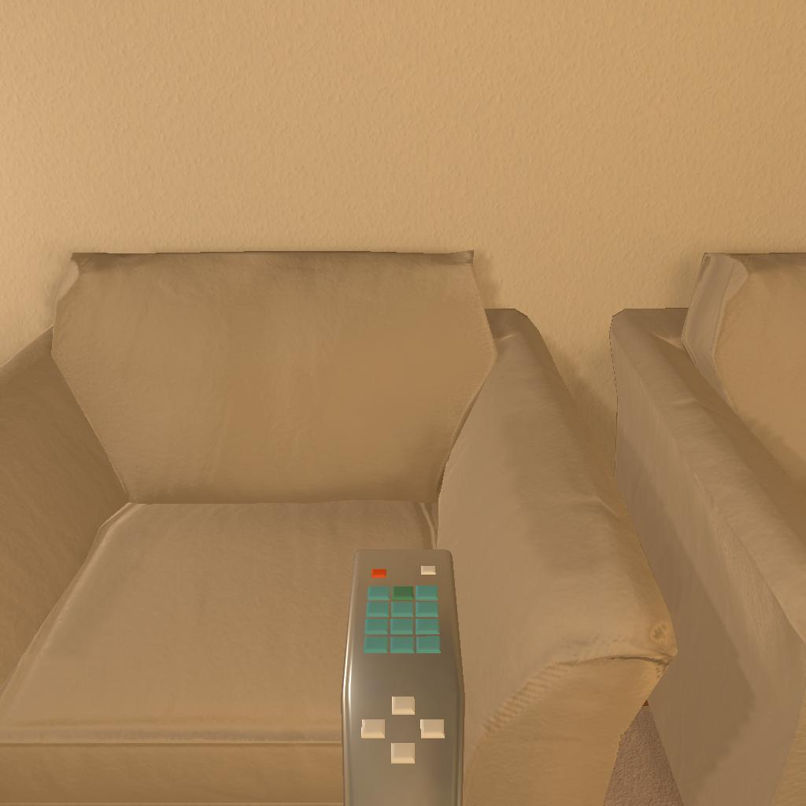

---------------------------------------------------------task: 7---------------------------------------------------------
--------------------------------------------------------------------------------------------------------------------------------------------------------------------
--------------------------------------------------------------------------------------------------------------------------------------------------------------------
Step:--------------------------------------------------------------------------19-------------------------------------------------------------------------------
----------------------------------------
VLM Prompt:
**Task**
Please perform as an embodied AI agent. Our final objective is to put some creditcard on coffeetable. Below is the plan for completing the task, the current observation, alongside historical data and admissible actions for the next step. Please determine the best action for the next step!
**Plan**
Below is a detailed step-by-step plan to complete the task.
1. Find a credit card.
2. Pick up the credit card.
3. Find a coffee table.
4. Place the picked-up credit card on the coffee table.
5. Find another credit card.
6. Pick up the second credit card.
7. Return to the same coffee table.
8. Place the second picked-up credit card on the coffee table with the first one.
**Current Observation**
Displayed is an image capturing the current position of the agent.
**History Information**
Displayed are the previous observations with their corresponding actions.
Current State 1:
1. Place: Unspecified (presumably a room with a sofa)
2. Step Index in Plan: 1
3. Objects: Credit cards, sofa
4. Action: Go to sofa 1
Current State 2:
1. Place: Unspecified room with a sofa
2. Step Index in Plan: 2
3. Objects: Credit cards on the sofa
4. Action: Take credit card 1 from sofa 1
Current State 3:
1. Place: Unspecified room with a sofa
2. Step Index in Plan: 3
3. Objects: Credit card, coffee table
4. Action: Go to coffee table 1
Current State 5:
1. Place: In a room with a coffee table
2. Step Index in Plan: 4
3. Objects: Credit card, remote control, coffee table
4. Action: Put remote control 1 in/on coffee table 1
Current State 6:
1. Place: Coffee Table
2. Step Index in Plan: 4
3. Objects: Credit Card, Remote Control, Coffee Table
4. Action: Put Credit Card in/on Coffee Table
Current State 7:
1. Place: Coffee table
2. Step Index in Plan: 5
3. Objects: Remote control, open cardboard box
4. Action: Go to sofa 1
Current State 8:
1. Place: Room with sofa 1
2. Step Index in Plan: 5
3. Objects: Credit card
4. Action: Examine sofa 1
Current State 9:
1. Place: Unspecified (Assumed to be the location of the sofa)
2. Step Index in Plan: 6
3. Objects: Credit card
4. Action: Examine remote control 1
Current State 10:
1. Place: Sofa 1
2. Step Index in Plan: 6
3. Objects: Remote Control 1, Credit Card (missing)
4. Action: Go to sofa 1
Current State 11:
1. Place: Near a sofa
2. Step Index in Plan: 6
3. Objects: Credit card
4. Action: Go to sofa 1
Current State 12:
1. Place: Sofa
2. Step Index in Plan: 7
3. Objects: Second credit card
4. Action: Go to coffeetable 1
Current State 13:
1. Place: Coffee table
2. Step Index in Plan: 7
3. Objects: Remote control, open cardboard box
4. Action: Examine remotecontrol 1
Current State 14:
1. Place: Coffee table
2. Step Index in Plan: 8
3. Objects: Second credit card, first credit card, open cardboard box, remote control
4. Action: Put second credit card on coffee table
Current State 15:
1. Place: Coffee table
2. Step Index in Plan: 8
3. Objects: Remote control, open cardboard box
4. Action: Go to sidetable 1
Current State 16:
1. Place: Side table
2. Step Index in Plan: 8
3. Objects: Remote control, side table
4. Action: Put remote control 1 in/on side table 1
Current State 17:
1. Place: Room with a coffee table
2. Step Index in Plan: 8
3. Objects: Second credit card, remote control, coffee table
4. Action: Go to armchair 1
Current State 19:
1. Place: Living room
2. Step Index in Plan: 8
3. Objects: Credit cards, coffee table, remote control, armchair
4. Action: go to armchair 2
**Admissible Actions**
(1): go to dresser 1
(2): go to garbagecan 1
(3): go to cabinet 1
(4): go to drawer 1
(5): go to drawer 2
(6): go to cabinet 2
(7): go to drawer 3
(8): go to cabinet 3
(9): go to drawer 4
(10): go to cabinet 4
(11): go to coffeetable 1
(12): go to sidetable 1
(13): go to sofa 1
(14): put remotecontrol 1 in/on armchair 2
(15): examine remotecontrol 1
**Analysis Guideline**
1. Analyze the **History Information** and determine our current step in the plan and our current place.
2. List all visible objects related to the task in the current observation.
3. Analyze the objects in the current observation based on the history and the requirements for the current step, and then determine if we can complete the step with the current observation.
4. Analyze and decide on the most appropriate action to take.
5. Summarize the analysis using the following format: "Analysis: [The summarization of the analysis], The Most Appropriate Action: (i which is the integer.): [Selected action]"
**Notes**
1. We must complete each step of the plan in order and cannot skip steps when the previous ones are not finished.
2. For "Go to" actions listed as "go to xxx [n]", interpret this as there are n distinct actions available: "go to xxx 1", "go to xxx 2", ..., "go to xxx n". Select one specific action from these options instead of using "go to xxx [n]".
3. If receptacles such as drawers, cabinets, and so forth are closed in the current observation, we may try to open them.
4. Pay attention to synonyms and ensure clarity in the terms used.
5. If there is no history available, we are at the first step and the current place is "Unknown".
6. The most appropriate action must be in the **Admissible Actions**, and we cannot generate a new action that is not in the **Admissible Actions**.
**Answer**
Please select the most suitable action by following the **Analysis Guideline**, keeping the above **Notes** in mind.
----------------------------------------
----------------------------------------
VLM Response:
Analysis: The current step in the plan is 8, where we need to place the second picked-up credit card on the coffee table with the first one. The current place is near a coffee table, as indicated by the image showing a remote control on it. The visible object related to the task in the current observation is the remote control. Since the current observation does not show the second credit card that needs to be placed on the coffee table, we cannot complete the step with the current observation. The most appropriate action to take is to go to the coffee table, which is already in the current observation, to then place the second credit card on it.
The Most Appropriate Action: (11): go to coffeetable 1
----------------------------------------
----------------------------------------
>>> Refine VLM Response and Get Pure Action: go to coffeetable 1
----------------------------------------
-----------------------------------------------------------------
Running time: 630.9649415016174 seconds
Total Money: 3.50655
-----------------------------------------------------------------
-----------------------------------------------------------------
Summarization Prompt:
**Context**
Analysis: The current step in the plan is 8, where we need to place the second picked-up credit card on the coffee table with the first one. The current place is near a coffee table, as indicated by the image showing a remote control on it. The visible object related to the task in the current observation is the remote control. Since the current observation does not show the second credit card that needs to be placed on the coffee table, we cannot complete the step with the current observation. The most appropriate action to take is to go to the coffee table, which is already in the current observation, to then place the second credit card on it.
The Most Appropriate Action: (11): go to coffeetable 1
**Summary Format**
1. Place: [Specify the current location]
2. Step Index in Plan: [Dispkay the current step number in the plan before taking the current action]
3. Objects: [List the objects relevant to the task]
4. Action: [Describe the most appropriate action without the "(x)" and keep the integer of the object]
Please analyze the **Context** and summarize the analysis using the **Summary Format**.
-----------------------------------------------------------------
-----------------------------------------------------------------
Summarization Response:
1. Place: Near a coffee table
2. Step Index in Plan: 8
3. Objects: Remote control
4. Action: Go to coffee table 1
-----------------------------------------------------------------
-----------------------------------------------------------------
Text Observation:You arrive at loc 12. On the coffeetable 1, you see a box 1, a remotecontrol 3, and a lightswitch 1.
-----------------------------------------------------------------
UNSUCCEED